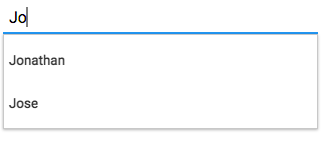

T - The type of the return values from the auto-complete function.public class AutoCompleteTextField<T> extends TextField
AutoCompleteTextField offers auto-complete suggestions to the user through a dropdown, so he may enter information more efficiently and accurately.
At the bare minimum the programmer has to supply a completer function, that is a function which given the string
the user has input will return a collection of auto-complete suggestions, a List of T. This function
is set by calling setCompleter(Function). It will run on a background thread.
Additionally he may specify a result node factory. The default result node factory for the auto-complete popup
returns a Label for each result given by the completer function, the text of the Label is given by
calling toString() on the result object. The node is then inserted into the auto-complete popup.
A developer may specify a custom result node factory by calling
setResultNodeFactory(Function) the function passed to this method must return a
Node for each T object received.
A search for auto-complete suggestions begins when the method search() is called.
There are two working modes: AutoCompleteTextField.CompleterMode.SEARCH_AUTOMATICALLY
which calls search() automatically after the user has input text and after a given time
period has elapsed which may be set by calling setCompleterWaitDuration(Duration),
and AutoCompleteTextField.CompleterMode.SEARCH_ON_REQUEST which makes the developer responsible for calling
search().
The default mode is to search automatically and not wait.
Finally, if a auto-complete suggestion has been selected, that selection can be retrieved by checking the
valueProperty(), if the value is null than no auto-complete suggestion has been selected
by the user.
The following example creates an AutoCompleteTextField and sets its completer function to return a List of
Person objects. The method toString() of the Person class returns the name of the Person.
To know when the user has selected an auto-complete suggestion a listener is attached to the
valueProperty() which prints to the console the value selected by the user.
AutoCompleteTextField<Person> autoCompleteTextField = new AutoCompleteTextField<>();
autoCompleteTextField.setCompleter(s -> {
List<Person> persons = Arrays.asList(new Person("Jonathan"), new Person("Jose"));
return persons;
});
autoCompleteTextField.valueProperty().addListener((observable, oldValue, newValue) -> {
System.out.println("New value selected from the auto-complete popup: " + newValue);
});
| Type | Property and Description |
|---|---|
javafx.beans.property.ObjectProperty<AutoCompleteTextField.CompleterMode> |
completerMode
The auto-complete
AutoCompleteTextField.CompleterMode. |
javafx.beans.property.ObjectProperty<java.util.function.Function<java.lang.String,java.util.List<T>>> |
completer
The auto-complete function.
|
javafx.beans.property.ObjectProperty<javafx.util.Duration> |
completerWaitDuration
This is the time interval to wait when the user stops typing before calling the
search function.
|
javafx.beans.property.ObjectProperty<java.util.function.Function<T,javafx.scene.Node>> |
resultNodeFactory
This will return a node to be shown in the auto-complete popup for each result returned
by the 'completer'
Function. |
javafx.beans.property.ReadOnlyObjectProperty<T> |
value
The value selected by the user from the auto-complete popup.
|
errorValidator, floatText, promptText, textcontextMenu, skinClassName, skin, tooltipbackground, border, cacheShape, centerShape, height, insets, maxHeight, maxWidth, minHeight, minWidth, opaqueInsets, padding, prefHeight, prefWidth, scaleShape, shape, snapToPixel, widthaccessibleHelp, accessibleRoleDescription, accessibleRole, accessibleText, blendMode, boundsInLocal, boundsInParent, cacheHint, cache, clip, cursor, depthTest, disabled, disable, effectiveNodeOrientation, effect, eventDispatcher, focused, focusTraversable, hover, id, impl_showMnemonics, impl_treeVisible, inputMethodRequests, layoutBounds, layoutX, layoutY, localToParentTransform, localToSceneTransform, managed, mouseTransparent, nodeOrientation, onContextMenuRequested, onDragDetected, onDragDone, onDragDropped, onDragEntered, onDragExited, onDragOver, onInputMethodTextChanged, onKeyPressed, onKeyReleased, onKeyTyped, onMouseClicked, onMouseDragEntered, onMouseDragExited, onMouseDragged, onMouseDragOver, onMouseDragReleased, onMouseEntered, onMouseExited, onMouseMoved, onMousePressed, onMouseReleased, onRotate, onRotationFinished, onRotationStarted, onScrollFinished, onScroll, onScrollStarted, onSwipeDown, onSwipeLeft, onSwipeRight, onSwipeUp, onTouchMoved, onTouchPressed, onTouchReleased, onTouchStationary, onZoomFinished, onZoom, onZoomStarted, opacity, parent, pickOnBounds, pressed, rotate, rotationAxis, scaleX, scaleY, scaleZ, scene, style, translateX, translateY, translateZ, visible| Modifier and Type | Class and Description |
|---|---|
static class |
AutoCompleteTextField.AutoCompleteEvent
Event generated by AutoCompleteTextField.
|
static class |
AutoCompleteTextField.CompleterMode
Enumeration that specifies the type of search being used by the AutoCompleteTextField.
|
| Constructor and Description |
|---|
AutoCompleteTextField()
The constructor for AutoCompleteTextField.
|
| Modifier and Type | Method and Description |
|---|---|
javafx.beans.property.ObjectProperty<AutoCompleteTextField.CompleterMode> |
completerModeProperty()
The auto-complete
AutoCompleteTextField.CompleterMode. |
javafx.beans.property.ObjectProperty<java.util.function.Function<java.lang.String,java.util.List<T>>> |
completerProperty()
The auto-complete function.
|
javafx.beans.property.ObjectProperty<javafx.util.Duration> |
completerWaitDurationProperty()
This is the time interval to wait when the user stops typing before calling the
search function.
|
protected javafx.scene.control.Skin<?> |
createDefaultSkin() |
java.util.function.Function<java.lang.String,java.util.List<T>> |
getCompleter()
Gets the value of the property completer.
|
AutoCompleteTextField.CompleterMode |
getCompleterMode()
Gets the value of the property completerMode.
|
javafx.util.Duration |
getCompleterWaitDuration()
Gets the value of the property completerWaitDuration.
|
java.util.function.Function<T,javafx.scene.Node> |
getResultNodeFactory()
Gets the value of the property resultNodeFactory.
|
T |
getValue()
Gets the value of the property value.
|
javafx.beans.property.ObjectProperty<java.util.function.Function<T,javafx.scene.Node>> |
resultNodeFactoryProperty()
This will return a node to be shown in the auto-complete popup for each result returned
by the 'completer'
Function. |
void |
search()
If the selected completerMode is
AutoCompleteTextField.CompleterMode.SEARCH_ON_REQUEST this function should be called by the
programmer to get the auto-complete results from the completer function. |
void |
setCompleter(java.util.function.Function<java.lang.String,java.util.List<T>> handler)
Sets the value of the property completer.
|
void |
setCompleterMode(AutoCompleteTextField.CompleterMode value)
Sets the value of the property completerMode.
|
void |
setCompleterWaitDuration(javafx.util.Duration number)
Sets the value of the property completerWaitDuration.
|
void |
setResultNodeFactory(java.util.function.Function<T,javafx.scene.Node> factory)
Sets the value of the property resultNodeFactory.
|
javafx.beans.property.ReadOnlyObjectProperty<T> |
valueProperty()
The value selected by the user from the auto-complete popup.
|
getMaxLength, maxLengthProperty, setMaxLengtherrorValidatorProperty, floatTextProperty, getErrorValidator, getFloatText, getPromptText, getText, promptTextProperty, setErrorValidator, setFloatText, setPromptText, setText, textPropertycomputeMaxHeight, computeMaxWidth, computeMinHeight, computeMinWidth, computePrefHeight, computePrefWidth, contextMenuProperty, executeAccessibleAction, getBaselineOffset, getClassCssMetaData, getContextMenu, getControlCssMetaData, getCssMetaData, getSkin, getTooltip, impl_cssGetFocusTraversableInitialValue, impl_processCSS, isResizable, layoutChildren, queryAccessibleAttribute, setContextMenu, setSkin, setTooltip, skinClassNameProperty, skinProperty, tooltipPropertybackgroundProperty, borderProperty, cacheShapeProperty, centerShapeProperty, getBackground, getBorder, getHeight, getInsets, getMaxHeight, getMaxWidth, getMinHeight, getMinWidth, getOpaqueInsets, getPadding, getPrefHeight, getPrefWidth, getShape, getUserAgentStylesheet, getWidth, heightProperty, impl_computeContains, impl_computeGeomBounds, impl_computeLayoutBounds, impl_createPeer, impl_notifyLayoutBoundsChanged, impl_pickNodeLocal, impl_updatePeer, insetsProperty, isCacheShape, isCenterShape, isScaleShape, isSnapToPixel, layoutInArea, layoutInArea, layoutInArea, layoutInArea, maxHeight, maxHeightProperty, maxWidth, maxWidthProperty, minHeight, minHeightProperty, minWidth, minWidthProperty, opaqueInsetsProperty, paddingProperty, positionInArea, positionInArea, prefHeight, prefHeightProperty, prefWidth, prefWidthProperty, resize, scaleShapeProperty, setBackground, setBorder, setCacheShape, setCenterShape, setHeight, setMaxHeight, setMaxSize, setMaxWidth, setMinHeight, setMinSize, setMinWidth, setOpaqueInsets, setPadding, setPrefHeight, setPrefSize, setPrefWidth, setScaleShape, setShape, setSnapToPixel, setWidth, shapeProperty, snappedBottomInset, snappedLeftInset, snappedRightInset, snappedTopInset, snapPosition, snapSize, snapSpace, snapToPixelProperty, widthPropertygetChildren, getChildrenUnmodifiable, getImpl_traversalEngine, getManagedChildren, getStylesheets, impl_getAllParentStylesheets, impl_processMXNode, impl_traversalEngineProperty, isNeedsLayout, layout, lookup, needsLayoutProperty, requestLayout, requestParentLayout, setImpl_traversalEngine, setNeedsLayout, updateBoundsaccessibleHelpProperty, accessibleRoleDescriptionProperty, accessibleRoleProperty, accessibleTextProperty, addEventFilter, addEventHandler, applyCss, autosize, blendModeProperty, boundsInLocalProperty, boundsInParentProperty, buildEventDispatchChain, cacheHintProperty, cacheProperty, clipProperty, computeAreaInScreen, contains, contains, containsBounds, cursorProperty, depthTestProperty, disabledProperty, disableProperty, effectiveNodeOrientationProperty, effectProperty, eventDispatcherProperty, fireEvent, focusedProperty, focusTraversableProperty, getAccessibleHelp, getAccessibleRole, getAccessibleRoleDescription, getAccessibleText, getBlendMode, getBoundsInLocal, getBoundsInParent, getCacheHint, getClip, getContentBias, getCursor, getDepthTest, getEffect, getEffectiveNodeOrientation, getEventDispatcher, getId, getInputMethodRequests, getLayoutBounds, getLayoutX, getLayoutY, getLocalToParentTransform, getLocalToSceneTransform, getNodeOrientation, getOnContextMenuRequested, getOnDragDetected, getOnDragDone, getOnDragDropped, getOnDragEntered, getOnDragExited, getOnDragOver, getOnInputMethodTextChanged, getOnKeyPressed, getOnKeyReleased, getOnKeyTyped, getOnMouseClicked, getOnMouseDragEntered, getOnMouseDragExited, getOnMouseDragged, getOnMouseDragOver, getOnMouseDragReleased, getOnMouseEntered, getOnMouseExited, getOnMouseMoved, getOnMousePressed, getOnMouseReleased, getOnRotate, getOnRotationFinished, getOnRotationStarted, getOnScroll, getOnScrollFinished, getOnScrollStarted, getOnSwipeDown, getOnSwipeLeft, getOnSwipeRight, getOnSwipeUp, getOnTouchMoved, getOnTouchPressed, getOnTouchReleased, getOnTouchStationary, getOnZoom, getOnZoomFinished, getOnZoomStarted, getOpacity, getParent, getProperties, getPseudoClassStates, getRotate, getRotationAxis, getScaleX, getScaleY, getScaleZ, getScene, getStyle, getStyleableParent, getStyleClass, getTransforms, getTranslateX, getTranslateY, getTranslateZ, getTypeSelector, getUserData, hasProperties, hoverProperty, idProperty, impl_clearDirty, impl_computeIntersects, impl_cssGetCursorInitialValue, impl_findStyles, impl_geomChanged, impl_getLeafTransform, impl_getMatchingStyles, impl_getPeer, impl_getPivotX, impl_getPivotY, impl_getPivotZ, impl_getStyleMap, impl_hasTransforms, impl_intersects, impl_intersectsBounds, impl_isDirty, impl_isDirtyEmpty, impl_isShowMnemonics, impl_isTreeVisible, impl_layoutBoundsChanged, impl_markDirty, impl_pickNode, impl_processCSS, impl_reapplyCSS, impl_setShowMnemonics, impl_setStyleMap, impl_showMnemonicsProperty, impl_syncPeer, impl_transformsChanged, impl_traverse, impl_treeVisibleProperty, inputMethodRequestsProperty, intersects, intersects, isCache, isDisable, isDisabled, isFocused, isFocusTraversable, isHover, isManaged, isMouseTransparent, isPickOnBounds, isPressed, isVisible, layoutBoundsProperty, layoutXProperty, layoutYProperty, localToParent, localToParent, localToParent, localToParent, localToParent, localToParentTransformProperty, localToScene, localToScene, localToScene, localToScene, localToScene, localToScene, localToScene, localToScene, localToScene, localToScene, localToSceneTransformProperty, localToScreen, localToScreen, localToScreen, localToScreen, localToScreen, lookupAll, managedProperty, mouseTransparentProperty, nodeOrientationProperty, notifyAccessibleAttributeChanged, onContextMenuRequestedProperty, onDragDetectedProperty, onDragDoneProperty, onDragDroppedProperty, onDragEnteredProperty, onDragExitedProperty, onDragOverProperty, onInputMethodTextChangedProperty, onKeyPressedProperty, onKeyReleasedProperty, onKeyTypedProperty, onMouseClickedProperty, onMouseDragEnteredProperty, onMouseDragExitedProperty, onMouseDraggedProperty, onMouseDragOverProperty, onMouseDragReleasedProperty, onMouseEnteredProperty, onMouseExitedProperty, onMouseMovedProperty, onMousePressedProperty, onMouseReleasedProperty, onRotateProperty, onRotationFinishedProperty, onRotationStartedProperty, onScrollFinishedProperty, onScrollProperty, onScrollStartedProperty, onSwipeDownProperty, onSwipeLeftProperty, onSwipeRightProperty, onSwipeUpProperty, onTouchMovedProperty, onTouchPressedProperty, onTouchReleasedProperty, onTouchStationaryProperty, onZoomFinishedProperty, onZoomProperty, onZoomStartedProperty, opacityProperty, parentProperty, parentToLocal, parentToLocal, parentToLocal, parentToLocal, parentToLocal, pickOnBoundsProperty, pressedProperty, pseudoClassStateChanged, relocate, removeEventFilter, removeEventHandler, requestFocus, resizeRelocate, rotateProperty, rotationAxisProperty, scaleXProperty, scaleYProperty, scaleZProperty, sceneProperty, sceneToLocal, sceneToLocal, sceneToLocal, sceneToLocal, sceneToLocal, sceneToLocal, sceneToLocal, sceneToLocal, screenToLocal, screenToLocal, screenToLocal, setAccessibleHelp, setAccessibleRole, setAccessibleRoleDescription, setAccessibleText, setBlendMode, setCache, setCacheHint, setClip, setCursor, setDepthTest, setDisable, setDisabled, setEffect, setEventDispatcher, setEventHandler, setFocused, setFocusTraversable, setHover, setId, setInputMethodRequests, setLayoutX, setLayoutY, setManaged, setMouseTransparent, setNodeOrientation, setOnContextMenuRequested, setOnDragDetected, setOnDragDone, setOnDragDropped, setOnDragEntered, setOnDragExited, setOnDragOver, setOnInputMethodTextChanged, setOnKeyPressed, setOnKeyReleased, setOnKeyTyped, setOnMouseClicked, setOnMouseDragEntered, setOnMouseDragExited, setOnMouseDragged, setOnMouseDragOver, setOnMouseDragReleased, setOnMouseEntered, setOnMouseExited, setOnMouseMoved, setOnMousePressed, setOnMouseReleased, setOnRotate, setOnRotationFinished, setOnRotationStarted, setOnScroll, setOnScrollFinished, setOnScrollStarted, setOnSwipeDown, setOnSwipeLeft, setOnSwipeRight, setOnSwipeUp, setOnTouchMoved, setOnTouchPressed, setOnTouchReleased, setOnTouchStationary, setOnZoom, setOnZoomFinished, setOnZoomStarted, setOpacity, setPickOnBounds, setPressed, setRotate, setRotationAxis, setScaleX, setScaleY, setScaleZ, setStyle, setTranslateX, setTranslateY, setTranslateZ, setUserData, setVisible, snapshot, snapshot, startDragAndDrop, startFullDrag, styleProperty, toBack, toFront, toString, translateXProperty, translateYProperty, translateZProperty, usesMirroring, visiblePropertypublic final javafx.beans.property.ObjectProperty<java.util.function.Function<java.lang.String,java.util.List<T>>> completerProperty
getCompleter(),
setCompleter(Function)public final javafx.beans.property.ObjectProperty<AutoCompleteTextField.CompleterMode> completerModeProperty
AutoCompleteTextField.CompleterMode. By default it is set to AutoCompleteTextField.CompleterMode.SEARCH_AUTOMATICALLY.public final javafx.beans.property.ObjectProperty<javafx.util.Duration> completerWaitDurationProperty
This is the time interval to wait when the user stops typing before calling the search function. The search function will only be called after the timer has elapsed. If the time interval hasn't elapsed and the user starts typing again the timer is reset.
The default value is to not wait.
public final javafx.beans.property.ObjectProperty<java.util.function.Function<T,javafx.scene.Node>> resultNodeFactoryProperty
Function. AutoCompleteTextField already supplies a default implementation
for this property: it returns a Label, its text is the result of calling toString on the object
returned by the completer Function.public final javafx.beans.property.ReadOnlyObjectProperty<T> valueProperty
getValue()public AutoCompleteTextField()
public final void setCompleter(java.util.function.Function<java.lang.String,java.util.List<T>> handler)
public final java.util.function.Function<java.lang.String,java.util.List<T>> getCompleter()
public final javafx.beans.property.ObjectProperty<java.util.function.Function<java.lang.String,java.util.List<T>>> completerProperty()
getCompleter(),
setCompleter(Function)public final AutoCompleteTextField.CompleterMode getCompleterMode()
AutoCompleteTextField.CompleterMode. By default it is set to AutoCompleteTextField.CompleterMode.SEARCH_AUTOMATICALLY.public final void setCompleterMode(AutoCompleteTextField.CompleterMode value)
AutoCompleteTextField.CompleterMode. By default it is set to AutoCompleteTextField.CompleterMode.SEARCH_AUTOMATICALLY.public final javafx.beans.property.ObjectProperty<AutoCompleteTextField.CompleterMode> completerModeProperty()
AutoCompleteTextField.CompleterMode. By default it is set to AutoCompleteTextField.CompleterMode.SEARCH_AUTOMATICALLY.public final javafx.util.Duration getCompleterWaitDuration()
This is the time interval to wait when the user stops typing before calling the search function. The search function will only be called after the timer has elapsed. If the time interval hasn't elapsed and the user starts typing again the timer is reset.
The default value is to not wait.
public final void setCompleterWaitDuration(javafx.util.Duration number)
This is the time interval to wait when the user stops typing before calling the search function. The search function will only be called after the timer has elapsed. If the time interval hasn't elapsed and the user starts typing again the timer is reset.
The default value is to not wait.
public final javafx.beans.property.ObjectProperty<javafx.util.Duration> completerWaitDurationProperty()
This is the time interval to wait when the user stops typing before calling the search function. The search function will only be called after the timer has elapsed. If the time interval hasn't elapsed and the user starts typing again the timer is reset.
The default value is to not wait.
public final void setResultNodeFactory(java.util.function.Function<T,javafx.scene.Node> factory)
Function. AutoCompleteTextField already supplies a default implementation
for this property: it returns a Label, its text is the result of calling toString on the object
returned by the completer Function.public final java.util.function.Function<T,javafx.scene.Node> getResultNodeFactory()
Function. AutoCompleteTextField already supplies a default implementation
for this property: it returns a Label, its text is the result of calling toString on the object
returned by the completer Function.public final javafx.beans.property.ObjectProperty<java.util.function.Function<T,javafx.scene.Node>> resultNodeFactoryProperty()
Function. AutoCompleteTextField already supplies a default implementation
for this property: it returns a Label, its text is the result of calling toString on the object
returned by the completer Function.public final T getValue()
public final javafx.beans.property.ReadOnlyObjectProperty<T> valueProperty()
getValue()public void search()
AutoCompleteTextField.CompleterMode.SEARCH_ON_REQUEST this function should be called by the
programmer to get the auto-complete results from the completer function.protected javafx.scene.control.Skin<?> createDefaultSkin()
createDefaultSkin in class TextField